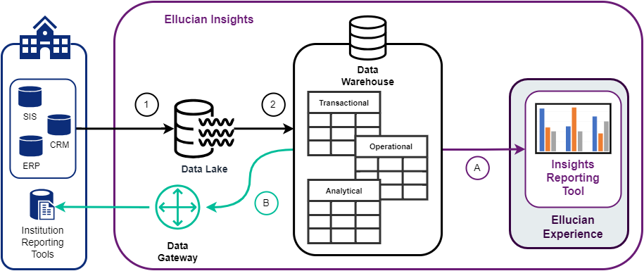

Ellucian Insights overview
Ellucian Insights is a cloud-based application that enables your institution to unlock operational efficiencies and democratize data management and intelligence through a unified Data Lake with intuitive self-service reporting, analytics, and extensibility tools.
Overview
- the Insights reporting tool within the Experience Platform, or
- you can connect your own reporting tool of choice directly to the Data Warehouse.
The Data Lake is a cloud-based ingestion service that enables the aggregation of data across Ellucian's solutions regardless of the solution’s deployment model and data persistence technology.
Configuring Ellucian Insights
Configuration occurs in Ellucian Experience. See Ellucian Insights setup checklist for more information.
Ellucian Insights data flow overview
Your data flows securely from your institution's source databases to the Ellucian Insights Data Lake and Data Warehouse where your data can then be accessed using your reporting tool.

- Insights ingests data from your institution's source databases to the Data Lake.
After ingesting your data, Insights uses Change Data Capture (CDC) to replicate changes into the Data Lake.
- Insights loads replicated and transformed data from the Data Lake into the Data Warehouse.
Within the Data Warehouse, data is represented in transactional, operational, and analytical data structures. Incremental data refreshes in the Data Warehouse ensure the changes replicated into the Data Lake are reflected in the Data Warehouse.
Operational transform structures (odsmgr schema) are proprietary to Ellucian Insights and are intended for use exclusively within Ellucian Insights. They shall not be transferred or used in integrations with data warehousing solutions external to Ellucian Insights.
After Step 2, your institution's data is ready for your reporting tools.
- Option A: If using Insights Premium, the Insights reporting tool connects directly to the Data Warehouse for reporting against transactional, operational, or analytical data structures.
- Option B: If using your own reporting tools, you can configure them to access the Insights Data Warehouse data through the Insights Data Gateway for reporting against transactional, operational, or analytical data structures.
The Insights Data Gateway provides a single JDBC/ODBC connection using a site-to-site Virtual Private Network (VPN) between the Ellucian Cloud and your network. The Insights Data Gateway is intended for connecting business intelligence and reporting tools directly to the Insights Data Warehouse only for reporting purposes. It is not intended for data integrations or database backups.
Data privacy in Insights
Ellucian Insights accommodates the data privacy settings in your source data. By masking, concealing, or hiding Personally Identifiable Information (PII), Insights reassures you that this sensitive data is not revealed in the Data Warehouse or in your chosen reporting tool, including Insights Premium.
PII data that is masked in your source (whether fully concealed, partially concealed, or hidden) may be masked in Insights. PII data might include sensitive information such as a social security number, taxpayer identification number, financial account number, and so on. Refer to your source system's policies and guidelines regarding PII.
How masked data displays in Insights
Ellucian Insights masks only varchar string, date, and timestamp fields.
- If the data to be masked is a string, it is concealed with asterisks.
- If a date or timestamp should be fully masked, it defaults to 1904-01-01.
- If only the year should be masked, the year is set to 1904.
This can impact some field calculations and reporting capabilities. For example, if date of birth is masked, a report that references an age calculation cannot return that data. You may need to redesign the report so that the data is grouped together at a higher level.
Insights does not mask data in columns that are part of a primary key, unique constraint, or unique index.
Data privacy in Banner
By default, Insights masks data in certain modules, tables, and columns that may contain PII.
Refer to the attached file ellucian_insights_masked_data_banner.xlsx for a list of the tables and columns that Insights masks. To download an attached file, click Attachment  on this topic, select the file, and click Download.
on this topic, select the file, and click Download.
Additionally, Insights masks the data according to the rules that your institution defined on the Data Display Mask Rules page (GORDMSK). Only those rules from GORDMSK which apply to all users (gordmsk_all_user_ind column set to Y) are masked in Insights.
Data privacy in Colleague
By default, Insights masks data in certain modules, tables, and columns that may contain PII.
Refer to the attached file ellucian_insights_masked_data_colleague.xlsx for a list of the tables and columns that Insights masks. To download an attached file, click Attachment on this topic, select the file, and click Download.
How to unmask data in Insights
The steps to unmask data in Insights depend on how the data was masked: either by Insights or by your source system (Banner only). Follow the instructions that align with your situation.
- Banner customers only: If the data is masked due to the rules defined in your source system:
- Follow the instructions for unmasking data in Banner. Refer to Data Display Mask Rules (GORDMSK) page for information.
- Your next scheduled data refresh will apply your Banner source system updates to the replicate tables in the Insights Data Warehouse.
- After that refresh completes, you must perform a data load for the associated tables and objects in the Data Warehouse.
- Banner and Colleague customers:
If your data is masked by Insights (as listed in the files attached to this topic), you must submit a request for Ellucian to unmask it.
- Go to the Ellucian Customer Center.
- Select Create a Support Case.
- Complete the form and include the following information.
Refer to the corresponding attached file to gather the necessary information.
- The supported system name (Banner or Colleague).
- Banner customers: Include the Module, Table, and Column names as listed in attached ellucian_insights_masked_data_banner.xlsx.
- Colleague customers: Include the associated Colleague Source File, Source Lookup File, and Source Lookup Column, as listed in ellucian_insights_masked_data_colleague.xlsx.
- Click Submit.
A representative from Ellucian will follow up with your request and assist with unmasking your data.
Ellucian ethics and data use standards
Ellucian understands that your institution may be concerned with the safety of your data that is used by Ellucian IQ. Exposing your institution's data to our machine learning tools and artificial intelligence may feel unsafe.
Ellucian knows that in the education industry, we have a duty to make fair and ethical decisions, and that is why humans will remain the ones to make the decisions. Ellucian IQ may make recommendations or identify trends, but humans will ensure the ethical and fair actions, not machines.
- Humans make the decisions.
- Machine learning tools can make recommendations, but there will be no automated decision making.
- Ellucian's data ethics board/committee will determine what uses of machine learning/AI tools provides the value while still being ethical and how data can be used to inform those uses.
- Tools will be designed to help humans.
- Ellucian's tools will be designed to help institutions make decisions that promote student success.
- Tools will identify ways that institutions can improve the human condition.
- Biases will be identified.
- Ellucian will work to identify existing biases in data sets that are used to train the models.
- We will acknowledge positive and negative biases that exist.
- We will attempt to have tools identify potential biases in human decisions.
- We will identify biases in results and give our customers options to correct identified biases.
- Personal data will be used responsibly.
- Personal data is required to train the models.
- Personal data will be (a) de-identified where possible, and (b) retained for only as long as required to train the models and for no longer than 6 months.
- Data sets will not be used across institutions without the consent of all impacted institutions.
- The models will be transparent and auditable,
- Ellucian will tell its customers how the models work before the customers decide to implement.
- Ellucian will be able to demonstrate why certain recommendations were made.